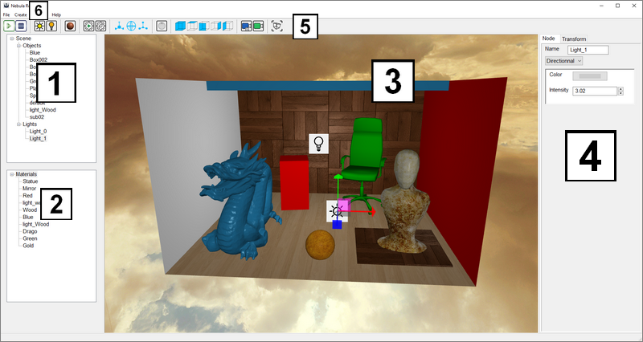

Nebula has a soft learning curve. The interface as well as the controls are quite intuitive.
Controls
Keyboard
- W, A, S, D : Move the camera.
- CRTL + Z / CTRL + SHIFT + Z : Undo/Redo.
- CRTL + C / CTRL + V : Copy/Paste.
- CRTL + S : Save the current scene.
- DELETE : Delete an item.
Mouse
- Left click : Select items / Material drag and drop.
- Right click + motion : Rotate the camera.
- Middle button click + motion: Camera padding.
- Middle button scroll : Zoom/Unzoom. This affect the vertical field of view of the camera.
- Auxiliary buttons : Increase/Decrease the camera's move sensibility.
- Right click on a material map to clear it.
-
Right click on a material in the left panel to assign it to the current selection.
Interface
Here a quick view of the main window:
The window is subdivided into 6 different parts:
-
Scene view
The list of all the scene items except materials. -
Material view
The list of the scene's materials. -
Realtime viewport
Fast DirectX preview allowing to interactively edit the scene.
The same viewport is used when performing realtime raytracing. -
Modifier editor
Alow to edit properties of the scene's items. -
Toolbar
A collection of helpers to edit the scene. -
Menu bar
Standard menu bar allowing to save the scene, create elements, export materials and much more.
More information about the different parts will come soon !